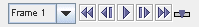

The McIDAS-X Bridge Controls are used to create and import a McIDAS-X session into McIDAS-V. The control window has two tabs. The first includes a pseudo duplicate of the two main McIDAS-X windows:

The second shows the settings for this display control:
Vertical cross sections can be made in three types of displays, with contour lines, color-filled contours, and as a color-shaded image.
- Command Line
- Smooth images
- Time Animation Controls
- Color Table
- Vertical Position
- Pixel Sampling
- Display data in the main 3D panel
- Use McIDAS-X frame order to override data time with frame number
- Use McIDAS-X data projection
McIDAS-X commands can be entered through the "Command Line" text entry box at the bottom of the Layer Controls tab. Interactive commands and recall controls are not implemented.
When checked, anti-aliasing will be used to smooth images when resizing to fit the frame display.

Controls looping of displays when more than one data time is loaded. See more in Time Animation Control.
The control has a color bar showing the active color table and the associated high and low data values in the units the display is made in. As the mouse pointer is moved over the color bar, the value at a particular color is shown. Click on the color bar to start the Color Table Editor. Or click on the button that displays the name of the color table to show a popup menu that allows you to change the range, select other color tables, etc.
This slider allows you to set the vertical position of the image.
Adjust the Pixel Sampling slider to change the resolution of the image. A larger number makes a lower resolution (coarser) display.
When checked images, graphics, and/or annotation lines from navigated frames in the McIDAS-X Bridge session will be imported into the main 3D panel in McIDAS-V. Non navigated frames are not imported into McIDAS-V and will be skipped.
When checked, navigated data will be imported into McIDAS-V based upon their order within the McIDAS-X frame order instead of by time.
When checked, the default data projection from McIDAS-X will be used when displayed navigated data in the main 3D panel in McIDAS-V. When unchecked, the McIDAS-V default data projection will be used.